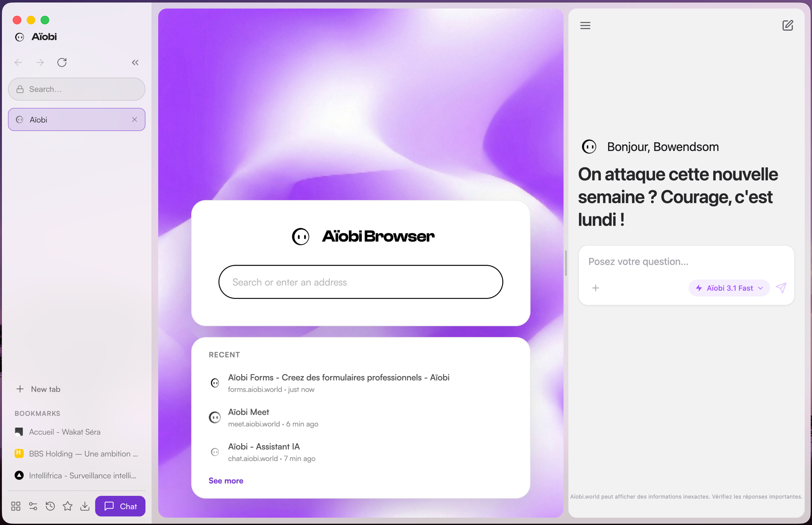
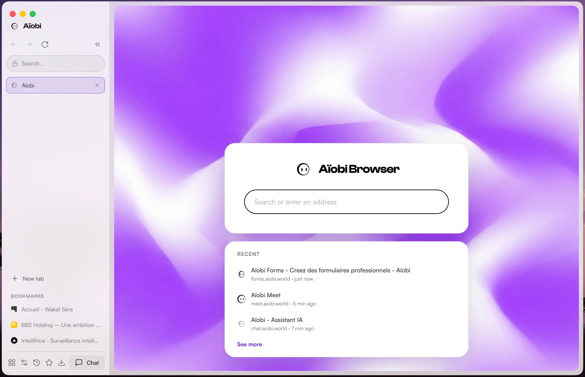
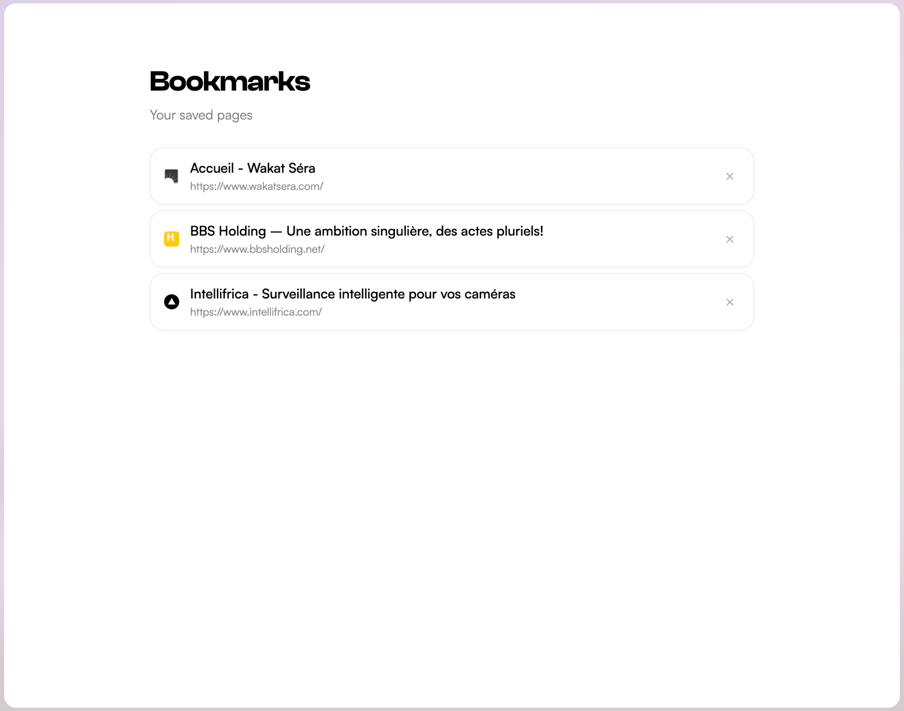
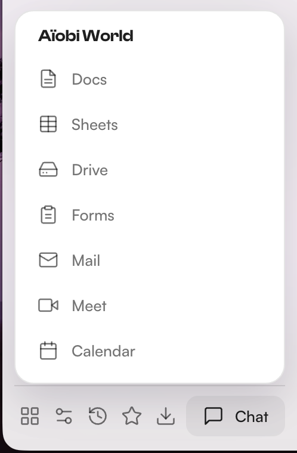

Chat IA intégré
Ouvrez l’assistant Aïobi en panneau latéral, sans quitter votre page.

Le navigateur
Simple, élégant, privé. Votre navigateur, votre marque, votre monde.
Gratuit · macOS, Windows, Linux ·
macOS : au 1ᵉʳ lancement, clic droit sur l’app → Ouvrir.
Une barre latérale claire, vos onglets à gauche, et tout le reste qui s’efface.

Ouvrez l’assistant Aïobi en panneau latéral, sans quitter votre page.

Vos pages sauvegardées, accessibles d’un geste.

Docs, Sheets, Drive, Forms, Mail, Meet, Calendar — à portée de clic.

Pas de pistage, vos données chiffrées par l’OS.
Brave par défaut, et cinq autres au choix.
Le moteur de Chrome, l’épure d’Aïobi.
Téléchargement direct, gratuit, sans compte.
macOS : au 1ᵉʳ lancement, clic droit sur l’app → Ouvrir.